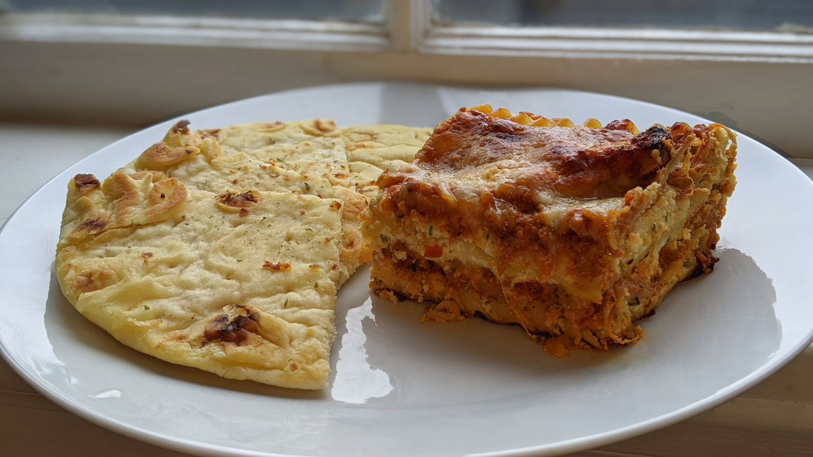
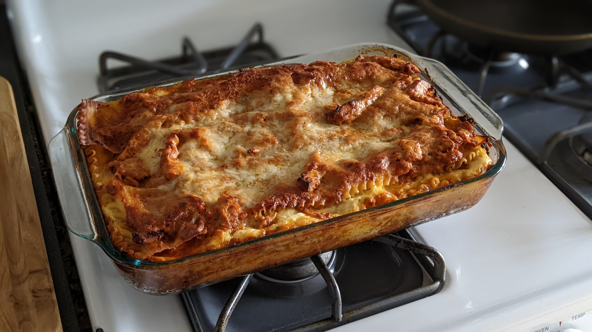

Butter Chicken Lasagna

Author: Derek Nichols |
Cooked: April 16, 2022
Yields: 6 Servings | Prep Time: 60 Minutes | Cook Time: 60 Minutes
Ingredients
- 1 lb chicken breast cut into 1.5" cubes
- 1/2 c. plain yogurt
- 1 1/2 Tbs minced garlic
- 1 Tbs minced ginger
- 2 tsp garam masala
- 1 tsp turmeric
- 1 tsp ground cumin
- 1 tsp red chili powder
- 1 tsp salt --------------------------
- 2 Tbs olive oil
- 2 Tbs ghee (or 1 Tbs butter and 1 Tbs oil)
- 1 large white onion, diced
- 1 1/2 Tbs minced garlic
- 1 Tbs minced ginger
- 1 1/2 tsp ground cumin
- 1 1/2 tsp garam masala
- 1 tsp ground coriander
- 14 oz crushed tomatoes
- 2 tsp red chili powder
- 1 1/4 tsp salt
- 1 c. heavy or thickened cream
- 1 Tbs sugar
- 1/4 - 1/2 c. water --------------------------
- 15 oz ricotta
- 2 large eggs
- 1/2 tsp salt
- 1/8 tsp black pepper
- 1/2 Tbs parsley
- 1/4 c. parmesan cheese
- 1 lb shredded mozzarella cheese
- 1 box no cook lasagna noodles
Butter Chicken Marinade
Butter Chicken Sauce
Lasagna
Directions
- Cut up chicken into 1.5"-2" cubes and combine with the marinade ingredients. Let marinate for at least an hour (or overnight if time allows).
- Heat oil in a large skillet. Add chicken in small batches and fry until browned - only 3 minutes per side (chicken will finish cooking in the sauce). Remove chicken from pan and set aside.
- Heat ghee in the same pan. Fry diced onion until they start to sweat (about 6 minutes) while scraping any bits off the bottom of the pan.
- Add garlic and ginger and sauté for 1 minute until fragrant, then add ground coriander, cumin and garam masala. Let cook for about 20 seconds until fragrant, while stirring occasionally.
- Add crushed tomatoes, chili powder, and salt. Simmer for roughly 12 minutes, stirring occasionally until the sauce thickens and becomes a deep brown, red color.
- Remove from heat and scoop into a blender. Blend until smooth.
- Pour the puréed sauce back into the pan. Stir in the cream and sugar. Add 1/4 - 1/2 c. water to slightly thin out the sauce. Add the chicken back into the pan and cook for 8 minutes.
- Shred or cut the cooked chicken into smaller pieces while still in the pan. --------------------------
Butter Chicken
- Preheat oven to 375°F.
- Combine ricotta, eggs, salt, pepper, parsley, and parmesan into a bowl and mix together.
- In a 9" x 9" pan, layer the lasagna as such:
- Sauce
- Lasagna noodle
- 1/3 ricotta mixture
- Sauce and chicken
- Lasagna noodle
- 1/3 ricotta mixture
- Mozzarella
- Sauce and chicken
- Lasagna noodle
- 1/3 ricotta mixture
- Sauce and chicken
- Lasagna noodle
- Sauce
- Mozzarella
- Parmesan
- Cover with foil and bake at 375°F for 40 minutes. Remove foil and bake for another 10 minutes.
Lasagna
Additional Notes

- Serve with naan!
- I originally made this in a 13" x 9" with double the ricotta mixture which made 8 servings, but it didn't have enough sauce. I think that this 6 serving version with less ricotta and more sauce per piece would be much better.